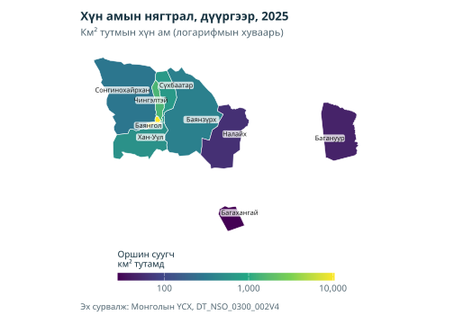
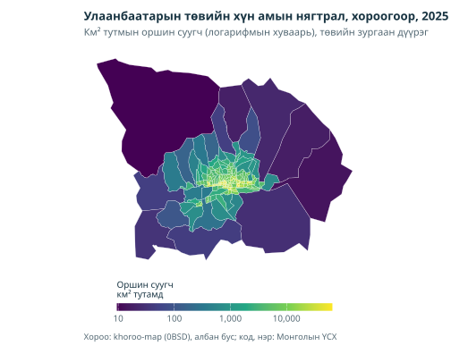
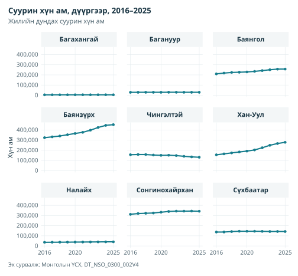
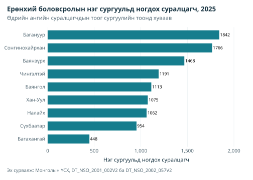
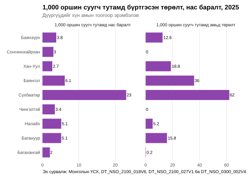
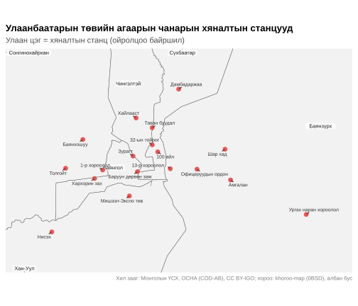
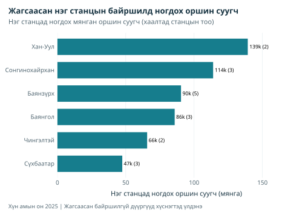

Улаанбаатарын дүүргийн түвшний шинжилгээ
Эх сурвалж:vignettes/ub-health-environment.Rmd
ub-health-environment.Rmd
library(mongolstats)
library(mongolmaps)
library(dplyr)
library(ggplot2)
library(sf)
library(tidyr)
# Шалгасан сургалтын туслах функцүүд багцад дагалдах бөгөөд кодыг нь үзэж болно.
source(system.file("examples", "analysis-helpers.R", package = "mongolstats"), local = TRUE)
old_options <- nso_options(mongolstats.lang = "en")
# Текст тасрахгүй байхаар ерөнхий загварт зөв захын зай өгөх
old_theme <- theme_set(
theme_minimal(base_size = 11) +
theme(
plot.margin = margin(10, 10, 10, 10),
plot.title = element_text(size = 13, face = "bold"),
plot.subtitle = element_text(size = 10, color = "grey40"),
legend.text = element_text(size = 9),
legend.title = element_text(size = 10)
)
)Удиртгал
Монголын нийслэл Улаанбаатарт улсын хүн амын ойролцоогоор тал нь амьдардаг. Энэ заавар ҮСХ-ны «сум, дүүргээр» нийтэлсэн хүснэгтээр есөн дүүргийн хүн ам, өсөлт, сургуулийн хүчин чадал, агаарын чанарын хяналтын сүлжээ, дүүргийн эрүүл мэндийн статистикийн хязгаарыг авч үзнэ.
Дүүргүүд ба код
mongolmaps нь ҮСХ-ны код, талбайтай дүүргийн хил зааг өгдөг тул нэр тааруулахгүйгээр хүснэгтийг холбоно.
ub_districts <- mn_ub_districts()
ub_districts |>
st_drop_geometry() |>
select(name, nso_code, area_km2)
#> # A tibble: 9 × 3
#> name nso_code area_km2
#> <chr> <chr> <dbl>
#> 1 Baganuur 51101 625.
#> 2 Bagakhangai 51104 156.
#> 3 Bayangol 51107 24.8
#> 4 Bayanzurkh 51110 1237.
#> 5 Nalaikh 51113 689.
#> 6 Songinokhairkhan 51116 1204.
#> 7 Sukhbaatar 51119 211.
#> 8 Khan-Uul 51122 498.
#> 9 Chingeltei 51125 91.1
# ҮСХ-ны хүснэгтээс зөвхөн есөн дүүргийг татах
get_ub_data <- function(tbl_id, selections = list()) {
data <- nso_data(
tbl_id,
selections = c(list(Region = ub_districts$nso_code), selections),
labels = "en"
) |>
mutate(District = trimws(Region_en))
expected <- tidyr::expand_grid(
Region = ub_districts$nso_code,
Year_en = as.character(selections$Year)
)
analysis_keys(data, c("Region", "Year_en"), expected)
data
}
# Хүснэгтийн хамарсан хамгийн сүүлийн он
latest_year <- function(tbl_id) {
analysis_latest_common_year(tbl_id)
}1. Хүн ам зүйн төлөв
Хүн амын нягтрал
Хүн амын DT_NSO_0300_002V4 хүснэгт жилийн дундах суурин хүн амыг хорооны түвшин хүртэл өгдөг. Энэ код каталогийн хоёр хүснэгтийг заадаг; mongolstats анхааруулж, эхний тохирлыг ашиглана. Тэр нь дүүргүүдийг мөн агуулсан хорооны түвшний хүснэгт юм.
pop_tbl <- "DT_NSO_0300_002V4"
pop_year <- latest_year(pop_tbl)
pop_data <- get_ub_data(pop_tbl, list(Year = pop_year))
ub_pop_map <- pop_data |>
mn_join(by = "Region", level = "soum", within = "Ulaanbaatar") |>
mutate(density = if_else(is.finite(value) & value > 0 &
is.finite(area_km2) & area_km2 > 0,
value / area_km2, NA_real_
))
stopifnot(nrow(ub_pop_map) == 9L, !anyDuplicated(ub_pop_map$nso_code))
mn_map(
ub_pop_map,
fill = density, trans = "log10", label = TRUE,
title = paste0("Population Density by District, ", pop_year)
) +
labs(
subtitle = "Residents per km² (log scale). Data: NSO Mongolia, DT_NSO_0300_002V4",
fill = "Residents\nper km²"
)
Баянгол хамгийн нягт, км² тутамд ойролцоогоор 10,400 оршин суугчтай. Багахангай хамгийн сийрэг, км² тутамд ойролцоогоор 28. Баянзүрх, Сонгинохайрхан зэрэг дүүрэг уул, бэлчээрийн том талбай агуулдаг тул дүүргийн дундаж маш нягт хорооллыг далдална. Хорооны түвшний өгөгдөл илүү нарийвчилна:
khoroo_codes <- nso_dim_values(pop_tbl, "Region")$code |>
stringr::str_subset("^511\\d{4}$") # долоон оронтой код нь хороод
khoroo_raw <- nso_data(
pop_tbl, list(Region = khoroo_codes, Year = pop_year),
labels = "en"
)
analysis_keys(khoroo_raw, "Region", tibble(Region = khoroo_codes))
khoroo_status <- nso_value_status(khoroo_raw)
khoroo_check <- khoroo_raw |>
mutate(Region = substr(Region, 1, 5)) |>
summarise(khoroo_sum = analysis_sum(value), .by = Region) |>
full_join(select(pop_data, Region, district_total = value),
by = join_by(Region), relationship = "one-to-one"
) |>
mutate(agrees = is.finite(khoroo_sum) & is.finite(district_total) & khoroo_sum == district_total)
knitr::kable(khoroo_check, caption = "Population reconciliation before using the illustrative khoroo map")| Нутаг дэвсгэр | khoroo_sum | district_total | Таарсан |
|---|---|---|---|
| 51101 | 29076 | 29076 | TRUE |
| 51104 | 4401 | 4401 | TRUE |
| 51107 | 257391 | 257391 | TRUE |
| 51110 | 452084 | 452084 | TRUE |
| 51113 | 40781 | 40781 | TRUE |
| 51116 | 341746 | 341746 | TRUE |
| 51119 | 142356 | 142356 | TRUE |
| 51122 | 278532 | 278532 | TRUE |
| 51125 | 131278 | 131278 | TRUE |
khoroo_pop <- mn_join(khoroo_raw, by = "Region", level = "bag", within = "Ulaanbaatar") |>
mutate(density = if_else(is.finite(value) & value > 0 &
is.finite(area_km2) & area_km2 > 0,
value / area_km2, NA_real_
))
stopifnot(!anyDuplicated(khoroo_pop$nso_code))
unmapped_khoroos <- setdiff(khoroo_raw$Region, khoroo_pop$nso_code)
central <- c("Bayangol", "Bayanzurkh", "Chingeltei", "Khan-Uul", "Songinokhairkhan", "Sukhbaatar")
mn_map(
filter(khoroo_pop, parent_pcode %in% ub_districts$pcode[ub_districts$name %in% central]),
fill = density, trans = "log10",
title = paste0("Population Density by Khoroo, Central Ulaanbaatar, ", pop_year)
) +
labs(subtitle = "Residents per km² (log scale), six central districts", fill = "Residents\nper km²")
Хорооны хил зааг албан бус. Эх сурвалжийн 0 кодод таарсан хил зааг байхгүй. Тулгалтын хүснэгт хил заагийн үе тохирч байгааг батлахгүй: хуваагдал, нэгдэл, кодын өөрчлөлтийг шалгах шаардлагатай. Энэ нь жишээ нягтралын зураг болохоос нарийн түвшний баталгаажсан эрсдэл, өртөлтийн өгөгдөл биш. Дутуу эсвэл эерэг бус утгыг логарифмын хуваарьт дүрслэхгүй.
Хүн амын өсөлтийн өөрчлөлт
Хурдан өсөлт орон нутгийн эрүүл мэнд, сургуулийн үйлчилгээнд ачаалал үүсгэж болно.
trend_years <- as.character(as.integer(pop_year) - 9:0)
pop_trend <- get_ub_data(pop_tbl, list(Year = trend_years)) |>
mutate(Year = as.integer(Year_en))
pop_trend |>
ggplot(aes(x = Year, y = value, color = District)) +
geom_line(linewidth = 1) +
geom_point(size = 1.5) +
scale_y_continuous(labels = scales::label_comma()) +
scale_x_continuous(breaks = as.integer(trend_years)) +
labs(
title = paste0("Resident Population by District, ", min(trend_years), "–", max(trend_years)),
subtitle = "Mid-year resident population",
y = "Population", x = NULL, color = "District",
caption = "Source: NSO Mongolia, DT_NSO_0300_002V4"
) +
theme(legend.position = "bottom", panel.grid.minor = element_blank())
2016–2025 оны жилийн арван ажиглалтын хооронд есөн жил өнгөрсөн. Доорх хүснэгт тэмдэгтэй нийт болон жилд шилжүүлсэн өөрчлөлтийг харуулна; сөрөг утга бууралтыг илэрхийлнэ. Багануурын хувийн өөрчлөлтийн абсолют хэмжээ хамгийн бага. Эдгээр нийт дүнгийн өөрчлөлт шилжилт хөдөлгөөн, үйлчилгээний хүчин чадлыг дангаараа тогтоохгүй.
knitr::kable(growth, digits = 1, caption = "Population change over the observed interval")| Дүүрэг | elapsed_years | Өөрчлөлт | annual_change |
|---|---|---|---|
| Хан-Уул | 9 | 79.5 | 6.7 |
| Баянзүрх | 9 | 39.5 | 3.8 |
| Баянгол | 9 | 22.6 | 2.3 |
| Налайх | 9 | 12.9 | 1.4 |
| Сонгинохайрхан | 9 | 9.7 | 1.0 |
| Багахангай | 9 | 6.4 | 0.7 |
| Сүхбаатар | 9 | 3.8 | 0.4 |
| Багануур | 9 | 1.3 | 0.1 |
| Чингэлтэй | 9 | -16.1 | -1.9 |
2. Сургуулийн суралцагчид
ҮСХ дүүргээр нийгэм эдийн засгийн цөөн үзүүлэлт нийтэлдэг. Ерөнхий боловсролын нэг сургуульд ногдох суралцагчийн тоо нийтийн үйлчилгээний ачааллын ойролцоо хэмжүүр өгнө.
edu_year <- analysis_latest_common_year(c("DT_NSO_2001_002V2", "DT_NSO_2002_057V2"))
schools <- get_ub_data("DT_NSO_2001_002V2", list(Year = edu_year)) |>
select(Region, District, Schools = value)
students <- get_ub_data("DT_NSO_2002_057V2", list(Year = edu_year)) |>
select(Region, Students = value)
edu_load <- analysis_pair(schools, students, "Region")
analysis_count_values(edu_load$Schools)
analysis_count_values(edu_load$Students)
stopifnot(
all(is.finite(edu_load$Schools)), all(edu_load$Schools > 0),
all(is.finite(edu_load$Students))
)
edu_load <- mutate(edu_load, Students_Per_School = Students / Schools)
ggplot(edu_load, aes(x = Students_Per_School, y = reorder(District, Students_Per_School))) +
geom_col(fill = "#2a78d6", width = 0.7) +
geom_text(aes(label = round(Students_Per_School)), hjust = -0.1, size = 3) +
scale_x_continuous(labels = scales::label_comma(), expand = expansion(mult = c(0, 0.15))) +
labs(
title = paste0("Students per General Education School, ", edu_year),
subtitle = "Full-time students divided by number of schools",
x = "Students per school", y = NULL,
caption = "Source: NSO Mongolia, DT_NSO_2001_002V2 and DT_NSO_2002_057V2"
) +
theme(panel.grid.major.y = element_blank(), panel.grid.minor = element_blank())
Энэ харьцаа нь байгууллага бүрийн дундаж суралцагчийн тоо болохоос ангийн хэмжээ, сул хүчин чадал, хэт ачаалал, гачигдлыг хэмжихгүй. Сургууль хэмжээ, өмчийн хэлбэр, ээлжийн зохион байгуулалтаар ялгаатай. Хоёр эх сурвалжийн хичээлийн жилийн тодорхойлолт, байгууллагын хамралт нийцэж байгааг баталгаажуулна.
3. Дүүргийн эрүүл мэндийн статистик: анхаарах зүйл
Түвшний хүртвэр, хуваарь нь ижил хүн амд хамаарах ёстой. Нэг оршин суугчид ногдох бүртгэлийн төрөлт, нас баралт ихээхэн жигд бус байвал газар нутгийн хуваарилалт, хамралт нийцэхгүйг илрүүлж болно. Доорх оношилгоо оршин суугчдын эрүүл мэндийн эрсдэлийн харьцуулалт биш. Эх тус бүрийн оршин суугаа эсвэл болсон газраар бүртгэх тодорхойлолтыг баталгаажуулах шаардлагатай.
vital_year <- analysis_latest_common_year(c("DT_NSO_2100_027V1", "DT_NSO_2100_018V6", pop_tbl))
births <- get_ub_data(
"DT_NSO_2100_018V6",
list(Indicator = "0", Year = vital_year) # Үзүүлэлтийн "0" код = хоёр хүйс
) |>
select(Region, District, count = value) |>
mutate(measure = "Live births per 1,000 residents")
deaths <- get_ub_data(
"DT_NSO_2100_027V1",
list(Indicator = "0", Year = vital_year) # Үзүүлэлтийн "0" код = бүх нас баралт
) |>
select(Region, District, count = value) |>
mutate(measure = "Deaths per 1,000 residents")
residents <- get_ub_data(pop_tbl, list(Year = vital_year)) |>
select(Region, residents = value)
vital_rates <- bind_rows(births, deaths) |>
left_join(residents, by = join_by(Region), relationship = "many-to-one") |>
mutate(rate = count / residents * 1000)
stopifnot(
all(is.finite(vital_rates$count)), all(is.finite(vital_rates$residents)),
all(vital_rates$residents > 0)
)
vital_rates |>
ggplot(aes(x = rate, y = reorder(District, residents))) +
geom_col(fill = "#8e44ad", width = 0.7) +
geom_text(aes(label = round(rate, 1)), hjust = -0.1, size = 3) +
facet_wrap(~measure, scales = "free_x") +
scale_x_continuous(expand = expansion(mult = c(0, 0.2))) +
labs(
title = paste0("Recorded Births and Deaths per 1,000 Residents, ", vital_year),
subtitle = "Districts ordered by number of residents",
x = NULL, y = NULL,
caption = "Source: NSO Mongolia, DT_NSO_2100_018V6, DT_NSO_2100_027V1 and DT_NSO_0300_002V4"
) +
theme(panel.grid.major.y = element_blank(), panel.grid.minor = element_blank())
Ажиглагдсан ялгаа болсон газраар бүртгэдэг эсвэл өөр хамралтын зөрүүтэй байж болохтой нийцнэ. Гэхдээ яг хуваарилах дүрмийг батлахгүй. ҮСХ эсвэл Эрүүл мэндийн хөгжлийн төв хүснэгт бүрийн тодорхойлолтыг баталгаажуулах хүртэл оношлох эдгээр харьцааг оршин суугчдын төрөлт, нас баралтын түвшин гэж тайлбарлаж болохгүй.
Эдгээр оношлох харьцааг оршин суугчдыг дүрсэлж байгаа мэтээр нягтрал, байгаль орчны хэмжүүртэй хамааруулж болохгүй. Дүүрэг харьцуулахад оршин суугаа газраар кодлосон нийцтэй үйл явдал, хүн ам авна. Хотын нийт дүн дүүрэг доторх зөрүүг багасгаж болох ч нийслэл рүү шилжүүлэн эмчлэх урсгал, эх сурвалжийн зөрүүтэй хамралтыг дангаараа шийдэхгүй.
4. Агаарын чанарын хяналтын сүлжээ
Дараах нь станцын 18 ойролцоо байршлын жишээ жагсаалт бөгөөд идэвхтэй хяналтын цэгийн баталгаажсан жагсаалт биш. Анхны эмхэтгэл World Air Quality Index төсөл зэрэг нээлттэй жагсаалтад тулгуурласан ч координат бүрийн URL, шалгасан огноог хадгалаагүй. Эдгээр талбар тодорхойгүй хэвээр. Өртөлт оноох, сүлжээ төлөвлөхөөс өмнө албан ёсны координат, ажилласан хугацаа, бохирдуулагчийн хамралтыг баталгаажуулна.
ub_aq_stations <- tribble(
~Station, ~Latitude, ~Longitude,
"Misheel-Expo center", 47.89428, 106.8825,
"West crossroad", 47.91576, 106.8940,
"1st micro district", 47.91798, 106.8481,
"13th micro district", 47.91761, 106.9374,
"32nd Toirog", 47.939333, 106.914333,
"Ofitseruudiin ordon", 47.916611, 106.972556,
"Kharkhorin market", 47.910583, 106.837111,
"Urgakh naran micro district", 47.873778, 107.115028,
"Dambdarjaa", 47.988250, 106.951167,
"Khailaast", 47.963528, 106.893889,
"Tolgoit", 47.920278, 106.799250,
"Zuragt", 47.92973, 106.8886,
"Amgalan", 47.906250, 107.016556,
"Nisekh", 47.86394, 106.7791,
"Tavan buudal", 47.954500, 106.914833,
"Bayankhoshuu", 47.945528, 106.822917,
"Sharkhad", 47.93375, 107.0103,
"100 ail", 47.93291, 106.9214
)
# Дутуу гарал үүслийг эх сурвалж, огноо зохиолгүйгээр ил тод хадгалах.
ub_aq_stations <- ub_aq_stations |>
mutate(
coordinate_source = "Historical illustrative compilation; unverified",
verified_at = NA_character_, operating_period = NA_character_,
pollutant_coverage = NA_character_
)
# Зөвхөн нэг полигонд харьяалагдсан байршлыг дүүргийн жагсаалтад тоолно.
station_points <- st_as_sf(ub_aq_stations, coords = c("Longitude", "Latitude"), crs = 4326)
polygon_matches <- st_intersects(station_points, ub_districts)
station_points$assignment <- if_else(lengths(polygon_matches) == 1L, "Unique", "Unresolved")
# Байршил нь цорын ганц утгаар тогтоогдсон станцыг дүүрэгт хуваарилах
ub_stations_sf <- station_points |>
filter(assignment == "Unique") |>
st_join(select(ub_districts, District = name))
analysis_keys(st_drop_geometry(ub_stations_sf), "Station")
knitr::kable(st_drop_geometry(filter(station_points, assignment != "Unique")),
caption = "Stations with unresolved district assignments"
)| Станц | coordinate_source | verified_at | operating_period | pollutant_coverage | Хуваарилалт |
|---|
# Станцгүй дүүргийг оролцуулан дүүрэг бүрийн станцын тоо
station_count <- ub_districts |>
st_drop_geometry() |>
select(District = name) |>
left_join(count(st_drop_geometry(ub_stations_sf), District, name = "Stations"), by = join_by(District)) |>
mutate(Stations = coalesce(Stations, 0L)) |>
arrange(desc(Stations))
knitr::kable(station_count, caption = "Uniquely assigned locations in the illustrative inventory by district")| Дүүрэг | Станцууд |
|---|---|
| Баянзүрх | 5 |
| Баянгол | 3 |
| Сонгинохайрхан | 3 |
| Сүхбаатар | 3 |
| Хан-Уул | 2 |
| Чингэлтэй | 2 |
| Багануур | 0 |
| Багахангай | 0 |
| Налайх | 0 |
Станцуудыг координатаар нь mongolmaps-ийн хялбаршуулсан дүүргийн хил заагт хуваарилна. Дүүргийн хилээс хэдэн зуун метр дотор байгаа станц нөгөө талд орж болно.
Орон зайн тархалт
# Станцуудын хүрээнд UTM 48N бүсэд (метрээр) 3 км захын зайтай томруулах
utm48n <- 32648
station_box <- ub_stations_sf |>
st_transform(utm48n) |>
st_buffer(3000) |>
st_bbox()
mn_map(filter(ub_districts, name %in% central),
label = TRUE, crs = utm48n,
title = "Air Quality Monitoring Stations in Central Ulaanbaatar"
) +
geom_sf(data = ub_stations_sf, color = "#e34948", size = 2.5, alpha = 0.9) +
ggrepel::geom_text_repel(
data = ub_stations_sf, aes(label = Station, geometry = geometry), stat = "sf_coordinates",
size = 2.4, color = "grey20", min.segment.length = 0, seed = 1
) +
coord_sf(
crs = utm48n, datum = NA,
xlim = station_box[c("xmin", "xmax")], ylim = station_box[c("ymin", "ymax")]
) +
labs(subtitle = "Red points = monitoring stations (approximate locations)")
Хамралт
station_coverage <- station_count |>
left_join(select(pop_data, District, Population = value), by = join_by(District)) |>
mutate(Pop_per_Station = if_else(Stations > 0, Population / Stations, NA_real_))
knitr::kable(station_coverage, caption = "All districts, including those without a listed location")| Дүүрэг | Станцууд | Хүн ам | Pop_per_Station |
|---|---|---|---|
| Баянзүрх | 5 | 452084 | 90416.8 |
| Баянгол | 3 | 257391 | 85797.0 |
| Сонгинохайрхан | 3 | 341746 | 113915.3 |
| Сүхбаатар | 3 | 142356 | 47452.0 |
| Хан-Уул | 2 | 278532 | 139266.0 |
| Чингэлтэй | 2 | 131278 | 65639.0 |
| Багануур | 0 | 29076 | NA |
| Багахангай | 0 | 4401 | NA |
| Налайх | 0 | 40781 | NA |
station_coverage |>
filter(Stations > 0) |>
ggplot(aes(x = Pop_per_Station / 1000, y = reorder(District, Pop_per_Station))) +
geom_col(fill = "#2a78d6", width = 0.7) +
geom_text(aes(label = paste0(round(Pop_per_Station / 1000), "k (", Stations, ")")), hjust = -0.1, size = 3) +
scale_x_continuous(expand = expansion(mult = c(0, 0.25))) +
labs(
title = "Residents per Listed Station Location",
subtitle = "Thousands of residents per station (number of stations in brackets)",
x = "Residents per station (thousands)", y = NULL,
caption = paste("Population year", pop_year, "| Districts with no listed location remain in the table")
) +
theme(panel.grid.major.y = element_blank(), panel.grid.minor = element_blank())
3 дүүрэгт энэ жагсаалтын хүрээнд цорын ганц утгаар хуваарилсан байршил байхгүй. Энэ нь хяналт огт байхгүйг батлахгүй. Жагсаасан байршилд ногдох хүн ам төлөөлөх чадварыг хэмжихгүй. Ажиллагааны төлөв, бохирдуулагчийн хамралт, газрын хэлбэр, эх үүсвэрээс зай чухал. Эдгээр харьцаа нэмэлт хяналтын төхөөрөмж хаана хамгийн их мэдээлэл өгөхийг тогтоохгүй.
Дүгнэлт
Хүснэгтүүд бүртгэлийн хүн ам, сургуулийн дундаж суралцагчийн ялгааг харуулна. Хил заагийн үеийг шалгах хүртэл нарийн түвшний нягтрал жишээ шинжтэй хэвээр. Эрүүл мэндийг харьцуулахад оршин суугаа газраар кодлосон нийцтэй үйл явдал шаардлагатай. Өртөлт, хяналтын хангалттай байдлыг үнэлэхээс өмнө станцын жагсаалтыг албан ёсоор баталгаажуулах хэрэгтэй.